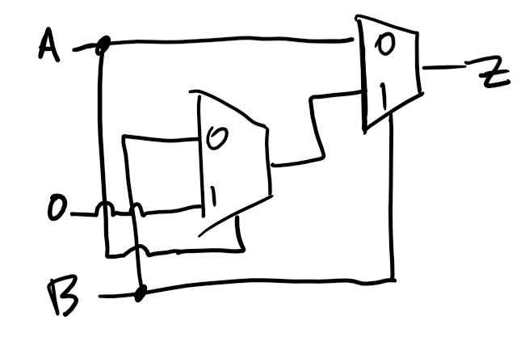
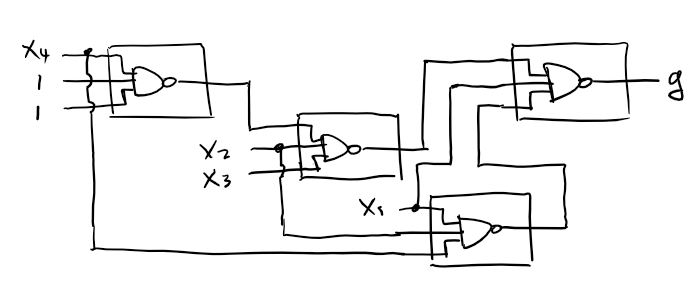

💾 Go Back
Last updated 2018-02-26 by Muchen
Problem Set 3
Q1
Explain why running an FPGA CAD tool multiple times with different random number seeds may lead to different results?
FPGA CAD tools uses random initial placement. The randomness is not true random but pseudo random which is based on a initial condition, thus a seed is required to make random placement. Trying every combination of placement has factorial complexity .
Q2
Timing analysis in all FPGA CAD tools is “conservative”; that is, these tools typically report a clock frequency that is lower than the maximum clock frequency of the actual circuit. Why?
One possibility is to make sure that the design will work on chips that have slower maximum clock frequency, just to be safe. This way provides more compatibility and ensures that all of the chips work.
Q3
Suppose you are designing a circuit to be run on the EP2C35, which has 105 M4K embedded memory blocks. Further, suppose your circuit takes of 85 of these blocks. You decide to instrument the circuit using Signal Tap, and identify 32 signals that are of interest. For how many clock cycles can record the behavior of these 32 signals? How would this number change if you switched to the EP2C70 which has 250 M4K blocks?
First, we need to know how much memory blocks we have available to store the recordings. We used 85/105 blocks so we have 20 left. Suppose each block has 4 kilobits of storage, then that's 80 kbits of information in total. Divided by 32 signals, that's 2,560 cycles. For a 50 MHz clock, the recording is 51.2 microseconds long.
If we upgraded and had a total of 250 M4K blocks, then we have blocks to spare. Which corresponds to 675,840 kilobits of storage and thus 21,120 cycles.
Q4
Give an example where Dynamic Partial Configuration may be useful.
Recall that dynamic partial configuration is when only part of the FPGA is reprogrammed while other already programmed parts are still operational. This requires that working components' locations on the FPGA to be known. One example of usage is routers. When a decoder circuit is needed on the fly. Rather than reprogramming the entire FPGA board, only part of it is required to be reprogrammed while the rest of the circuit can continue to perform tasks.
Q5
Consider the following Verilog code. Suppose this code is compiled and mapped to an FPGA consisting of 2-input lookup tables. How many 2-input lookup-tables would be required to implement this circuit? Show your work.
assign SUM A B CARRY_IN;assign CARRY_OUT (A B) (CARRY_IN (A B));Since both SUM and CARRY_OUT signal uses expressions more than 2-inputs we need to break it down.
The SUM signal is a composition of A^B and (A ^ B) ^ CARRY_IN and thus need to use two LUTs.
The CARRY_OUT signal can be decomposed into four 2-input operations. Thus four LUTs are required.
The total LUTs required totals to 6.
Q6
An -input lookup table can implement any function of inputs. How many different -input functions are there? (your answer will be a function of )
For an -input LUT, there are entries. But for each entry, it can either be 0 or 1. Thus the total possible combinations of 0s and 1s in spots are .
Q7
Show how one can build an 8-to-1 one bit multiplexer using 4-input lookup tables. Recall from class, a 4-input lookup table can implement any function of 4 or fewer inputs.
Not Optimized
First, an 8-to-1 multiplexer uses a at least 3 bit selection bits. Thus, there are a total of 8+3=11 bit input bits. The output signal can be expressed as the expression:
So each of the products uses a 4-input LUT (total of 8), then all is fed into a 8-bit wide OR gate. The 8-bit wide OR gate can be divided into two 4-bit OR gates cascaded by a 2-bit OR gate. The OR gates uses a total of three 4-input LUTs.
This solution is not very optimized because it uses excess logic. See below for optimized solution
Optimized
We can use the 4-input LUTs to implement a 2-1 MUX which takes 3 inputs (4-1 MUX is too much since it will use 6 input bits).
Then we can build an 8-1 MUX in a pyramid formation. First we multiplex the 8 inputs into 4 bits by multiplexing every two signals into one. One selection bit and four 2-input LUTs are used here.
Then, do the same process for the outputted 4-bits and get 2 bits. On this layer, the second selection bit and two more LUTs are used.
Finally, we multiplex the last 2 bits into 1. Here, the last selection bit and one more LUT are used.
Total of 7 LUTs are used.
Q8
Recall that an FPGA logic block consists of a lookup-table and a flip-flop as shown below. The select line of the multiplexer is controlled by a Configuration bit (labeled C in the diagram); this allows the logic block to implement either sequential or combinational logic.
See Piazza for diagrams
First, there are three flip-flops. So we need at least 3 logic blocks. There is some combinational logic blocks (including the 4-input AND gate) that would normally fit into the 3 logic blocks already used.
But notice that if we try that, the combinational logic block will have five inputs (Input A, input B, and three outputs from the flip flops). Thus, we use a separate logic block for the combinational logic.
Bringing total number of logic blocks to 4.
Q9
Suppose we have implemented a circuit on an FPGA. The circuit has inputs A, B, C, D, E, and F, and output W, and uses three logic blocks, as shown below. The state of each configuration bit is also shown below. Assume the clock inputs to each flip-flop are connected to the same signal called clk (not shown for clarity).
See Piazza for diagrams
Draw a schematic diagram that has the same behavior as the above implementation. You can use basic gates (AND, OR, NAND, NOR, XOR, Inverter), flip-flops, and tri-state buffers in your design (your diagram must not contain multiplexers or LUTs).
The top left logic block does not use the flip flop. Based on the LUT, we can give an expression of an XOR gate:
xxxxxxxxxxout1 = A ^ B ^ C
The bottom left logic block, however, does use the flip flop. Nonetheless, the expression for the LUT is:
xxxxxxxxxxout2 <= ~(D & E & F)
Which is an NOR gate.
The last logic block also uses the flip-flop. It's LUT expression is the OR of the lower two bits. This make sense since we're not using the MSB anyway.
xxxxxxxxxxW <= out1 | out2
Putting everything together:

Q10
Consider an FPGA in which each lookup table is replaced by a pair of multiplexers, as shown below.
See Piazza for diagrams
Each input pin (IN1 to IN5) can be driven by any signal or tied to “0” or tied to “1”.
A
Show how one of these blocks can be used to implement a two-input XOR gate. Clearly indicate what is connected to each input pin.
First, the expression of Z in terms of input names is can be written as
xxxxxxxxxxZ = (IN1 & ~IN5) | (IN2 & ~IN4) | (IN3 & IN4)
Now it is just the matter of simplifying to match the expression for XOR, which is
xxxxxxxxxxZ = (A & ~B) | (~A & B)
Immediately, we notice that we should get rid of the term (IN3 & IN4) by setting it to 0, but we shouldn't touch IN4 since it is used in other terms. Thus we will tie IN3 to 0. It follows that A drives both IN1 and IN4 , and B drives both IN2 and IN5.
The final circuit is as follows.

B
Show how a one-bit full adder can be implemented using one or more of these logic blocks. Try to minimize the number of logic blocks required. For each logic block used, clearly indicate what is connected to each input pin (IN1 to IN5).
Hint: repeat part (a) for an AND gate and OR gate, then try to combine them to implement the full adder equations.
A 1-bit full adder consists of three inputs: A, B, and Cin. And has two outputs: S and Cout. The expression for the output is as follows:
xxxxxxxxxxS = Cin ^ A ^ BCout = (A ^ B) | (A & B)
Using the XOR block built in part a, we can built the logic for S no problem. The Cout signal, however, consists of additional AND and OR gates. We will first treat the A ^ B term with a separate XOR block, and substitute it with a C. For the rest, we could build them separately using the default block. But we can fit them onto a single block to save space. This block will be called CARRY.
Again, start with the general expression of the given logic block:
xxxxxxxxxxZ = (IN1 & ~IN5) | (IN2 & ~IN4) | (IN3 & IN4)
We want
xxxxxxxxxxZ = C | (A & B)
So obviously we need to keep the IN3 & IN4 term. Because of this, we set the IN2 & ~IN4 term to 0 by driving IN2 with 0.
Next we want to make IN1 & ~IN5 equivalent to C. To do this, we set IN5 to 0, and IN1 to be driven by C, the output of the A ^ B XOR gate. Lastly, we make IN3=A and IN4=B.
Finally, the complete circuit looks like this:

Q11
Assume that an FPGA exists in which each logic block consists of a three input NAND gate (rather than a Lookup table). Each of the inputs to each NAND gate can be connected to either a 0, a 1, or any logic signal. Show how the following logic function can be realized in the FPGA (hint: use deMorgan’s Teorem … you have have to look that up from CPEN 211or do a Google search). f and g are outputs, and x1 through x4 are inputs. If you are not familiar with the notation, x1’ means the inverse of x1.
a) f = (x1 & x2 ) | x3
Double negating it gives us the equivalent logic, then apple deMorgan identity:
xxxxxxxxxxf (((x1 x2) x3))f ((x1 x2) x3)f ((x1 x2 1) (x3 1 1) 1)In circuit form:

b) g = (x1 & x2 & x4) | (x2 & x3 & ~x4) | (~x1)
Do the same thing.
xg = ~(~((x1 & x2 & x4) | (x2 & x3 & ~x4) | (~x1)))g = ~(~(x1 & x2 & x4) & ~(x2 & x3 & ~x4) & x1)g = ~(~(x1 & x2 & x4) & ~(x2 & x3 & ~(x4) & 1 & 1) & x1)
In circuit form:
